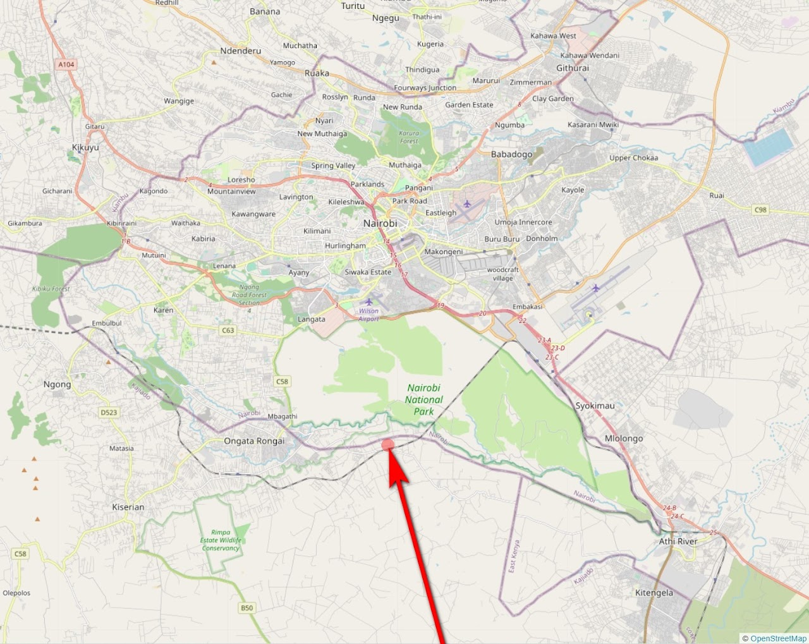

← All parcels
Location
All three parcels sit within a few kilometres of each other.
The farm, the river frontage plot, and the main-road plot are approximately two to three km past Tuala town, off the Ongata Rongai–Kitengela road, roughly 10km from Ongata Rongai and close to Kitengela Glass Studio. Use the map below for a wider view.

Nearby landmarks
- Ongata Rongai — 10km by road
- Galleria Mall / Bomas — 14km
- Kitengela Glass Studio
- Precious Gems Primary School (adjacent to the farm)
- Leleshwa Getaway
- Ololo Safari Lodge
- Africa Nazarene University
- Nairobi National Park (visible from the farm; river frontage plot borders it directly)